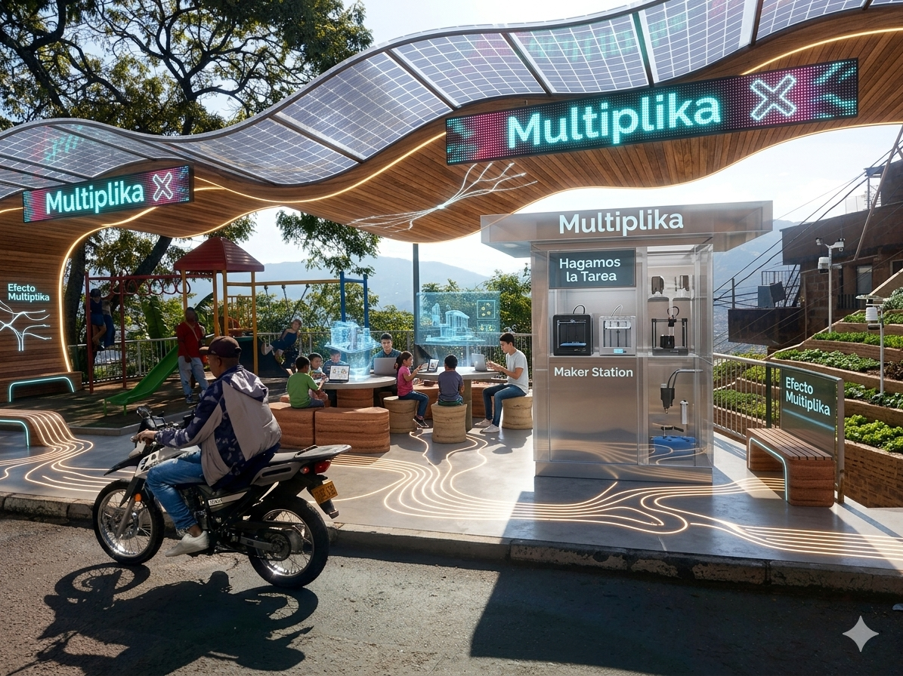

Nuestra Identidad
Propósito que Transforma
Misión
Empoderar a las juventudes de Manrique mediante el acceso a tecnologías emergentes y metodologías colaborativas, convirtiendo el barrio en un epicentro de innovación social y creativa.
Visión
Ser reconocidos en 2031 como la red de aprendizaje comunitario más influyente de la ladera de Medellín, exportando talento y proyectos que resuelven retos globales desde la identidad local.
Metodología
Aprendizaje entre Pares: El motor que multiplica talentos. No dependemos de jerarquías externas; son los jóvenes con conocimientos avanzados quienes guían a sus compañeros, creando una red de apoyo mutuo y crecimiento exponencial.
"No enseñamos respuestas, despertamos preguntas."
En MULTIPLICA, el conocimiento no se entrega como un paquete cerrado. Aplicamos la mayéutica: el arte de dar a luz ideas. Invitamos a los jóvenes a descubrir su propio poder a través del diálogo, la curiosidad radical y el cuestionamiento constante de su entorno para transformarlo.
Memorias Visuales
El barrio en acción


.jpeg)
.jpeg)